Сначала оцените, насколько это срочно
От этого зависит, кому звонить в ближайшую минуту.
Опасно для жизни — звоните 103
Немедленно прекратите процедуру, обеспечьте безопасность и вызывайте помощь. Не продолжайте уход, пока не разберутся врачи.
- Потеря сознания
- Нарастающая одышка, человеку тяжело дышать
- Резкое падение насыщения крови кислородом
- Кровь или другой опасный признак
- Состояние резко ухудшилось
С мобильного также 112.
Что-то не так — остановитесь и сообщите
Прекратите то, что делаете, убедитесь, что человеку безопасно, и позвоните ответственному. Продолжать можно, только когда вам разрешат.
- Человеку явно больно или очень некомфортно
- Вы не уверены, что делаете правильно
- Состояние изменилось, и вы не понимаете почему
На что обратить внимание
Повод обратиться, даже когда прямой угрозы нет.
Что приготовить до звонка
- Имя человека, за которым ухаживают, и адрес
- Что именно изменилось и когда вы это заметили
- Что вы уже сделали и что произошло после
- Выписку из больницы и назначения, если они на руках
- Список лекарств, которые человек принимает
- Кто сейчас рядом с человеком
Что делать ночью и в выходные
Порядок действий в нерабочее время должен быть записан в документах, которые вам выдают при передаче человека под уход: куда звонить, кто принимает решение и что делать, если связь недоступна.
Что записать после того, как остановились
Запись должна отвечать на один вопрос: почему остановились и что сделали дальше.
- Дата и время
- Что именно произошло
- Кому вы сообщили
- Что предприняли и чем закончилось
Куда обратиться
Единый вход в систему долговременного ухода. Вы описываете проблему обычными словами — маршрут подбирают за вас.
Что происходит после звонка
Оператор принимает обращение
Выслушивает и записывает, что происходит.
Определяет, о чём идёт речь
Какая помощь нужна и кто ей занимается.
Оценивает срочность
Насколько быстро нужно реагировать.
Передаёт координатору
Тот подбирает маршрут и подключает нужную службу.
С вами связываются
Через 7 и через 30 дней перезвонят и спросят, помогло ли.
Координационный центр
Связующее звено всей системы. Он объединяет ресурсы, людей и решения ради одного — чтобы помощь приходила вовремя и была непрерывной.
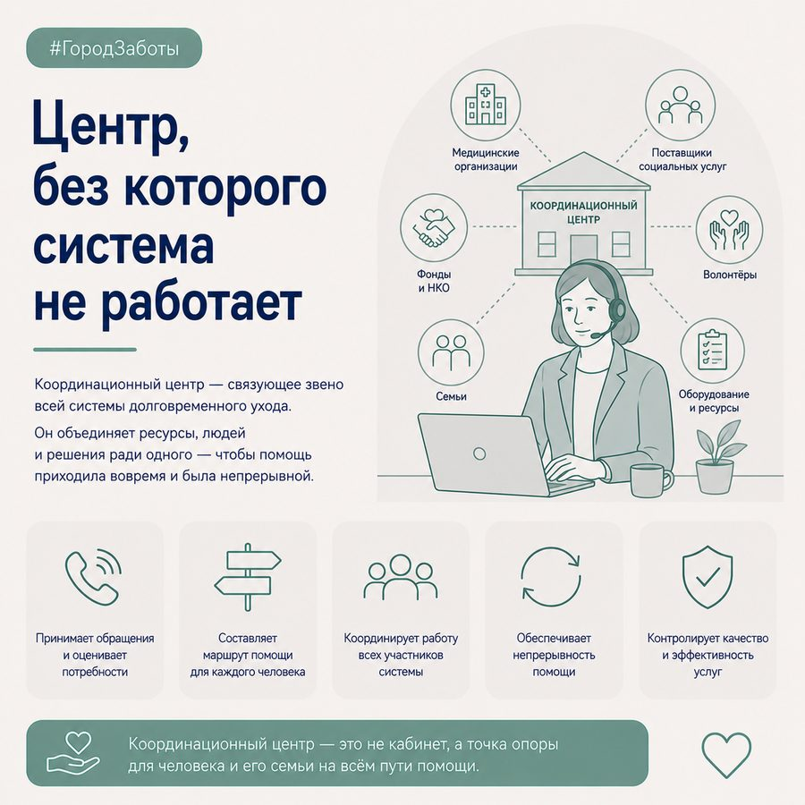
Почему помощь опаздывает после выписки из больницы
Человека выписывают — и семья остаётся один на один с вопросами: как кормить, где взять кровать, кому звонить, если больно, какие услуги положены.
Сегодня в Тольятти нет единой цепочки, по которой информация о выписанном пациенте оперативно попадает в социальную службу. Именно этот разрыв и призван закрыть проект «Точка входа».
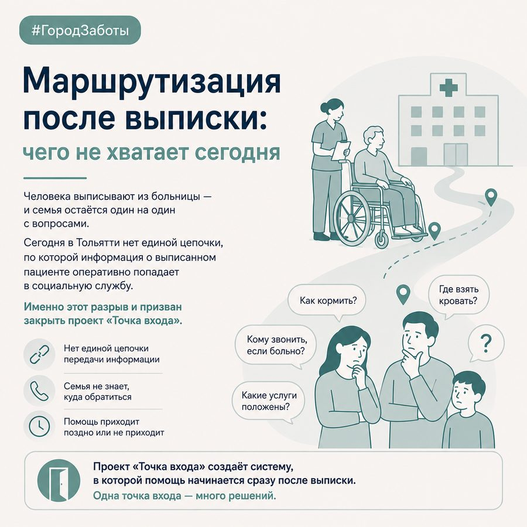
Куда вас могут направить
- Паллиативная медицинская помощь
- Социальное обслуживание на дому
- Долговременный уход
- Консультация специалиста
- Сопровождение с подключением нескольких служб
Что может и чего не может оператор
Первый разговор может вести оператор, прошедший специальное обучение. Его полномочия ограничены намеренно — чтобы никто не давал медицинских советов без права на это.
Выслушать и записать, что происходит. Передать координатору. Подсказать, куда обратиться.
Поставить диагноз. Принять решение о лечении. Назначить уход. Самостоятельно поменять маршрут.
Другие способы обратиться
- Телефон горячей линии
- Чат-бот с короткой анкетой
- Электронная форма обращения
- Письменное обращение
- Личный приём
О чём спросит чат-бот
Шесть вопросов, около двух минут: имя, телефон, электронная почта, организация (по желанию), тип запроса и описание проблемы. Бот собирает то же, что оператор спрашивает голосом, — чтобы к моменту разговора у координатора уже была картина.
Команды: Начать — запустить заново, Результаты — показать свои ответы, Отмена — прервать.
Как описать проблему, чтобы вам помогли
Нужен уход по состоянию, помогите.
Мама не встаёт две недели, кожа на крестце покраснела, переворачиваем сами два раза в день, функциональной кровати нет.
Со второго описания сразу понятно: есть риск пролежней, нужна кровать, семью надо научить переворачивать. С первого — непонятно ничего.
Не знаете, с чего начать — просто напишите
Подскажем, куда в Тольятти обратиться. Это бесплатно и не требует документов.
Что такое долговременный уход
Не обслуживание, а сохранение жизни и её качества.
Долговременный уход — это система мер, которая помогает человеку сохранять функциональность, замедляет ухудшение и поддерживает качество жизни.
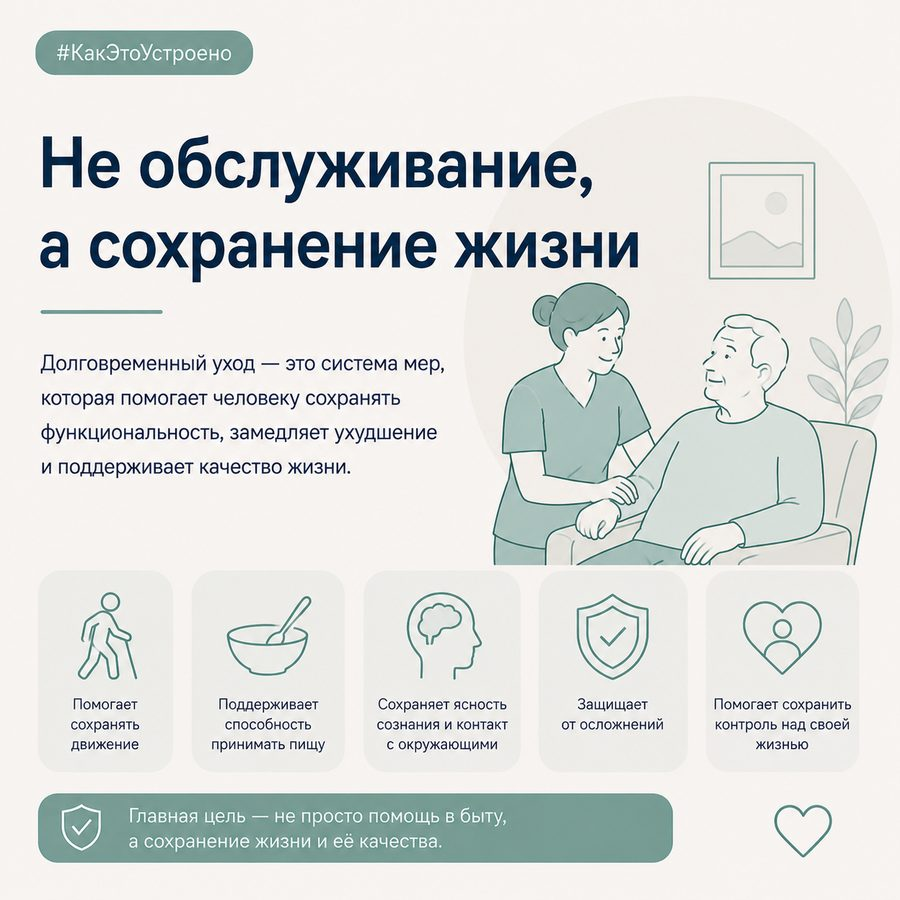
Кому положена такая помощь
Гражданам пожилого возраста и людям с инвалидностью, которые нуждаются в уходе. Решающее значение имеет не диагноз и не наличие инвалидности, а реальная утрата способности справляться с повседневными делами.
Помощь получает не только сам человек, но и семья, которая за ним ухаживает.
На каком основании это работает
Правила на 2026 год установлены приказом Минтруда России от 23.12.2025 № 731, которым утверждена Типовая модель системы долговременного ухода. Работа идёт в рамках федерального проекта «Старшее поколение» национального проекта «Семья».
Такой приказ издаётся на каждый год: на 2025 год действовал приказ № 732. С 1 января 2027 года систему планируется закрепить на уровне федерального закона.
Базовый закон, в связке с которым всё работает, — Федеральный закон № 442-ФЗ «Об основах социального обслуживания граждан в Российской Федерации».
Это работает только в отдельных регионах?
Нет. До сентября 2023 года участвовали 34 региона, а с 1 сентября 2023 года система распространена на все регионы страны. При этом объём и организация помощи на местах отличаются.
С чего начать и куда идти
Обратиться нужно в организацию социального обслуживания по месту жительства — как правило, это комплексный центр социального обслуживания населения. Обратиться может сам человек, его родственник или законный представитель.
Заявку может передать и больница: выявление людей, нуждающихся в уходе, — часть системы, а не только личная инициатива семьи.
Сколько ждать решения
Первичная оценка нуждаемости проводится в течение пяти рабочих дней после обращения. Признание человека нуждающимся в социальном обслуживании тоже занимает не более пяти рабочих дней и идёт параллельно с обычной процедурой — это не две отдельные очереди.
Что за программа, которую составляют
Индивидуальная программа предоставления социальных услуг. Её составляют представители организации вместе с получателем помощи или его законным представителем. В программе указывают, какие услуги положены и в каком объёме — в часах.
Чем это отличается от обычного соцобслуживания на дому
Социальное обслуживание на дому существует само по себе. Долговременный уход надстраивается над ним: добавляет оценку нуждаемости, увеличенный объём помощи для тяжёлых случаев, связку с медицинской помощью и работу с семьёй.
Человек может получать обычное соцобслуживание, а после оценки перейти в долговременный уход с бо́льшим объёмом.
Это платно?
Социальный пакет долговременного ухода предоставляется бесплатно. Услуги сверх пакета могут оказываться на других условиях — уточняйте у координатора до начала работ.
Оценка нуждаемости и три уровня
Оценка не про цифры. Она про то, насколько человек может жить самостоятельно — и что нужно, чтобы помочь ему сохранить эту возможность.
Действия, из которых состоит жизнь
Оценивают не диагноз, а способность к повседневным действиям.
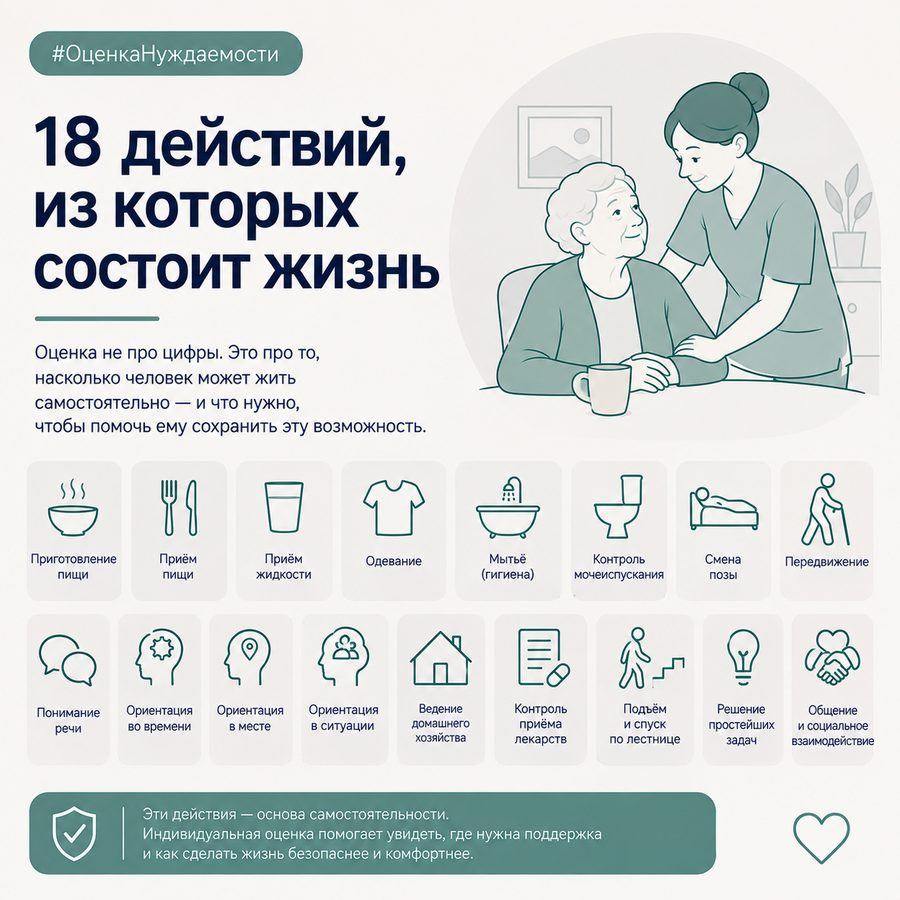
Три уровня — и три разных жизни
Объём помощи определяется уровнем нуждаемости.
Короткий визит раз в день
Помощь в самых необходимых делах.
Регулярная помощь
Несколько посещений в неделю: забота, поддержка, контроль состояния.
Ежедневное длительное присутствие
Почти постоянная помощь в течение дня: уход, поддержка, сопровождение.
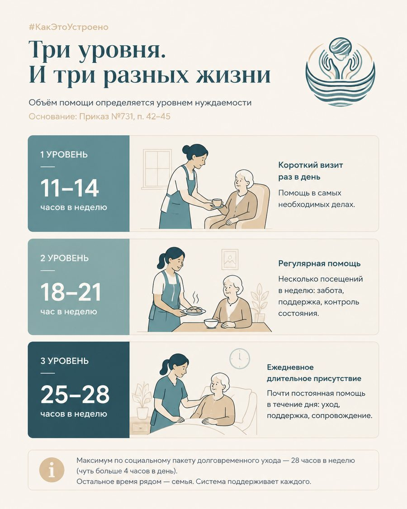
Ноль баллов — не отказ
Если по оценочной шкале набрано 0–15 баллов, уровень нуждаемости не устанавливается и социальный пакет долговременного ухода не назначается.
Это не отказ и не «вы недостаточно больны». Это значит, что вам доступны другие формы поддержки: помощь по хозяйству, социально-психологическая поддержка, сопровождение и другие услуги.
Делать за человека то, что он может сам, не помогает — навыки уходят быстрее.
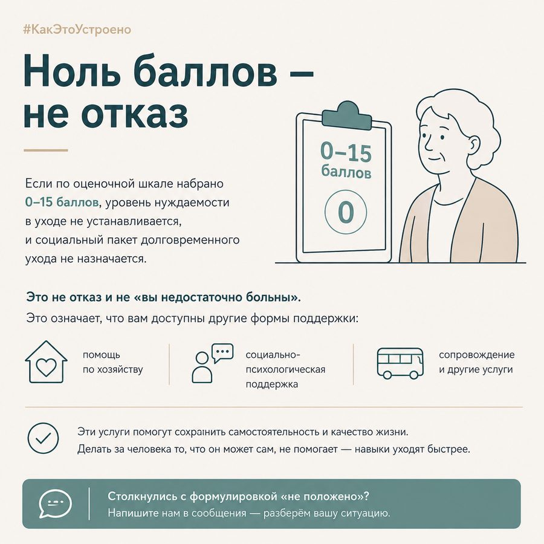
Боль — тоже критерий
Хроническая боль незаметно разрушает способность человека к самообслуживанию и снижает качество жизни. Специалист не просто спрашивает «болит ли у вас» — он выясняет, насколько эта боль ограничивает повседневную жизнь.
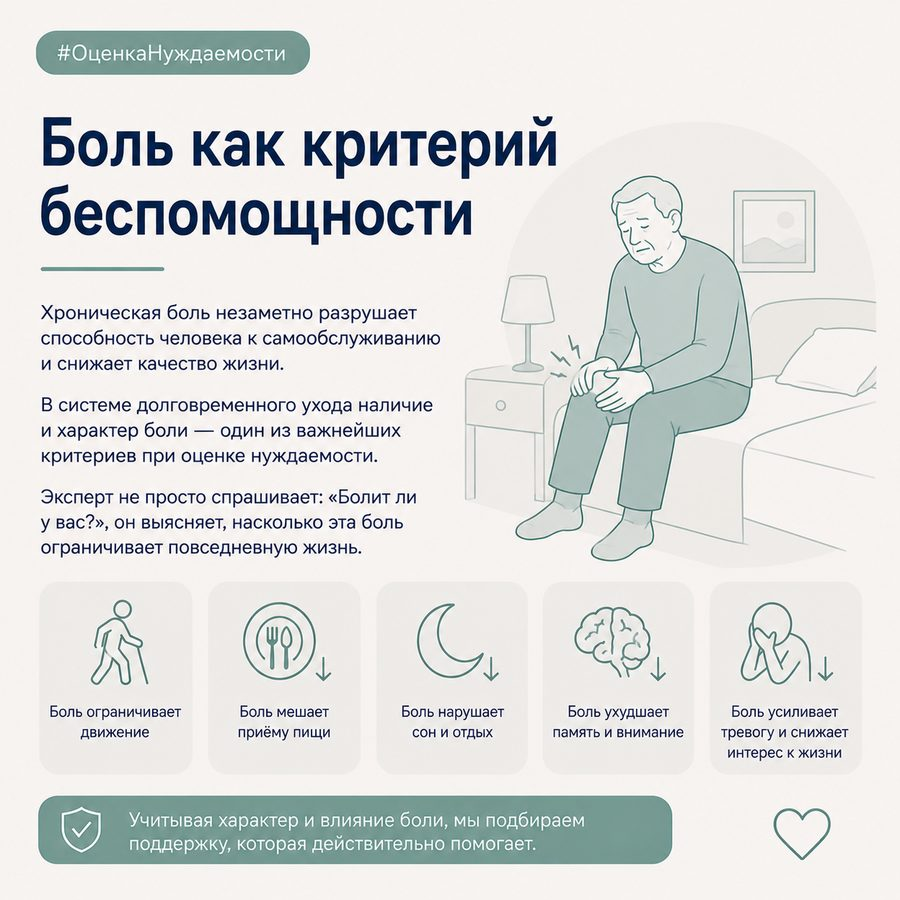
Когда память становится фактором риска
Когнитивные нарушения повышают риск ошибок и опасных ситуаций. Они требуют большего внимания, поддержки и обеспечения безопасности.
- Оценка памяти
- Оценка понимания речи
- Оценка ориентации во времени
- Оценка способности обеспечить личную безопасность
- Определение необходимого объёма помощи и поддержки
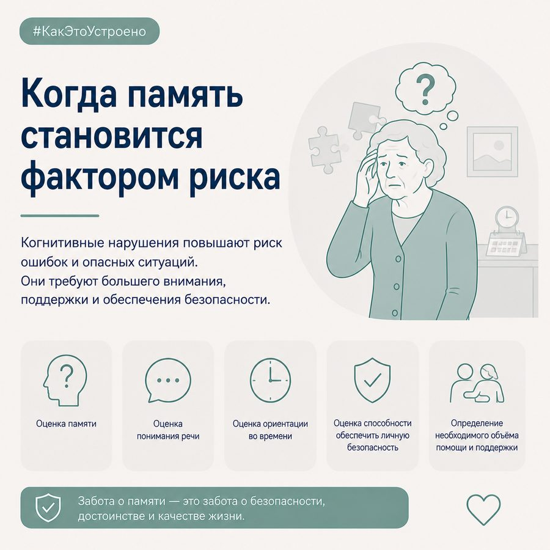
Как часто приходит организатор ухода
Организатор ухода приходит, чтобы посмотреть, как идёт уход, и вовремя заметить, что что-то изменилось. Периодичность визитов зависит от уровня нуждаемости:
- 3 уровень — раз в месяц
- 2 уровень — раз в квартал
- 1 уровень — раз в полгода
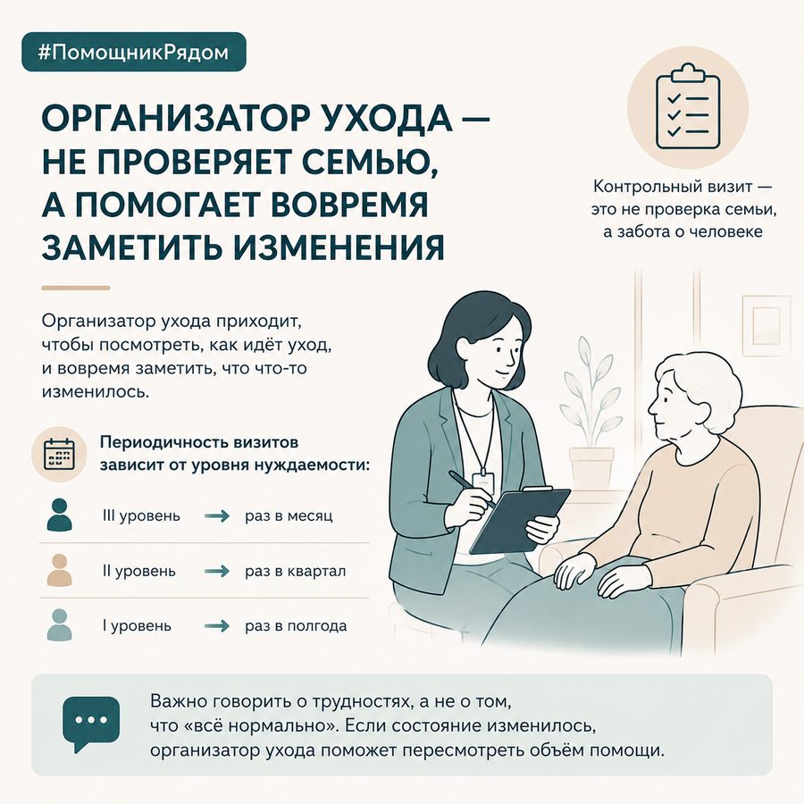
Уровень определили один раз и навсегда?
Нет. Результаты оценки пересматриваются регулярно. Кроме того, оценку проводят внепланово, если появились обстоятельства, которые улучшили или ухудшили условия жизни человека.
Выписка из больницы, перелом, инсульт, уход из семьи того, кто ухаживал, — всё это основания просить о пересмотре.
«11–14 часов» — это гарантия?
Это диапазон объёма для уровня, а не фиксированная выдача. Фактический объём записывают в индивидуальную программу исходя из реальной потребности человека.
Если фактический объём заметно меньше вашей потребности, это повод просить о внеплановой оценке и пересмотре программы.
Практика ухода
Алгоритмы, которые стоит показать всем, кто участвует в уходе. Техника здесь — только половина дела.
Замещать или ассистировать
Делать за человека.
→ Самостоятельность снижается
Поддерживать и помогать делать самому.
→ Самостоятельность сохраняется и растёт
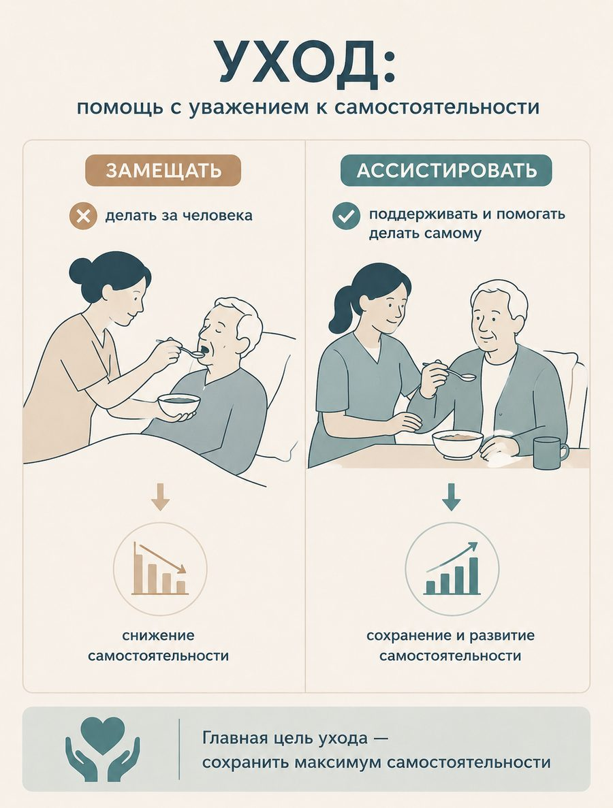
Уважение как часть ухода
Профессиональный уход — это не только навыки и действия, но и уважение к человеку. Достоинство, личные границы и внимание к чувствам — основа доверия и комфорта каждый день.
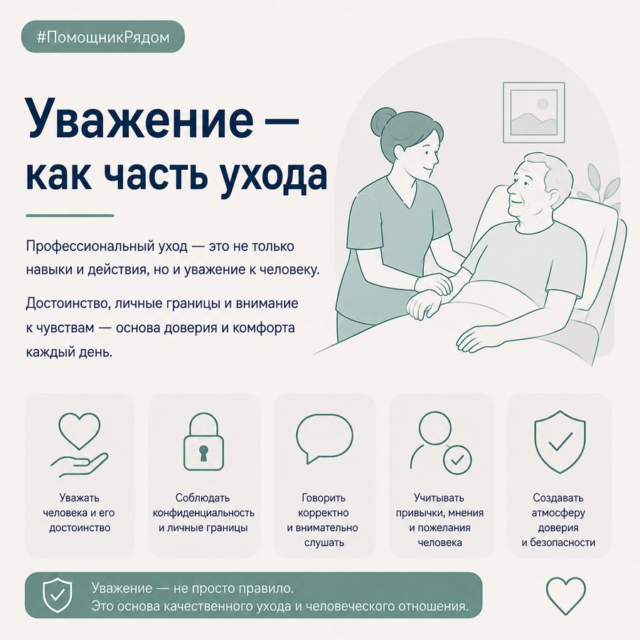
Смена абсорбирующего белья
Технически это несложно. Психологически — одна из самых тяжёлых процедур для обеих сторон.
1. Подготовка
- Закрыть дверь, исключить сквозняк
- Приготовить чистое бельё, влажные салфетки, средство для очищения кожи, защитный крем
- Пакет для использованного, перчатки
2. Выполнение
- Объяснить, что сейчас будет
- Открыть только ту часть тела, с которой работаете, остальное укрыть
- Очистить кожу движением спереди назад
- Тщательно просушить
- Осмотреть кожу на предмет покраснений
- Нанести защитное средство и надеть чистое бельё
3. Завершение
- Проветрить помещение
- Вымыть руки
- Записать состояние кожи в дневник ухода
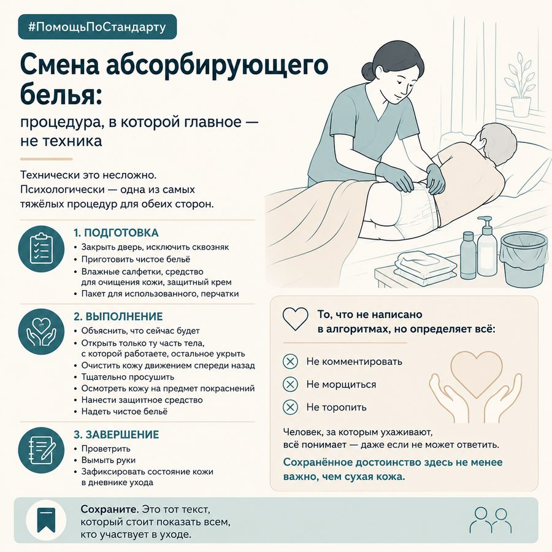
Помощь при приёме пищи: 30 минут, которые нельзя торопить
Кормление — одна из самых рискованных процедур в уходе. По графику приёмов пищи, около 30 минут каждый раз.
1. Подготовка
- Проверьте положение тела: человек должен сидеть или полусидеть
- Проверьте температуру блюда
- Салфетка и вода рядом
- Вымойте руки — свои и того, кому помогаете
2. Выполнение
- Давайте пищу небольшими порциями
- Пауза после каждого глотка
- Никаких разговоров и телевизора во время еды
- Ложку подавайте снизу, а не сверху — так голова не запрокидывается
3. Завершение
- Сохраняйте вертикальное положение ещё 20–30 минут
- Осмотрите полость рта
- Уберите остатки пищи, приведите место в порядок
Результат: человек поел без поперхивания, полость рта чистая, положение безопасное.
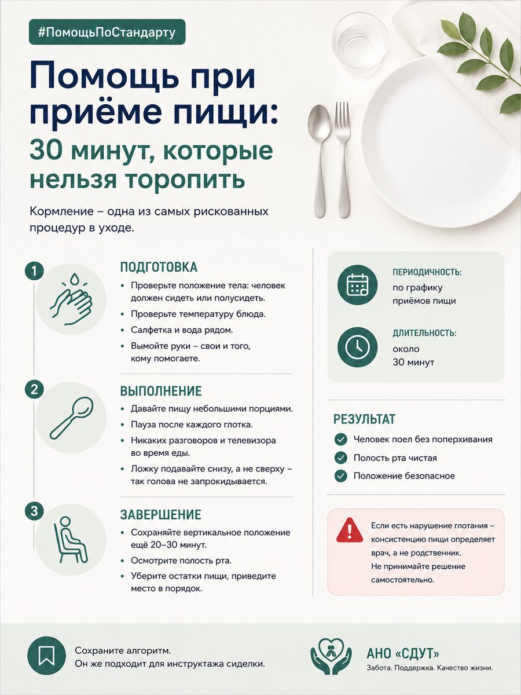
Недоедание, которое не замечают
Недостаточное питание — это не просто потеря веса, а серьёзный риск для здоровья и качества жизни. Качественный уход включает полноценное питание и контроль питьевого режима.
Услуги по питанию в рамках ухода: приготовление пищи, помощь при приёме пищи, контроль питьевого режима.
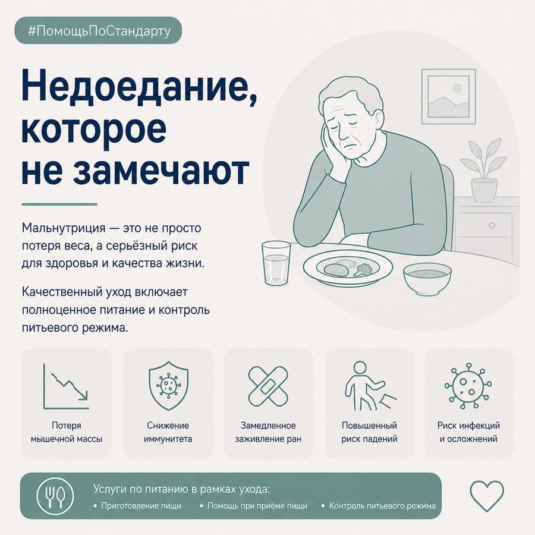
Пролежни — индикатор качества ухода
Пролежни — не неизбежность, а следствие недостаточного ухода. Позиционирование — важная мера профилактики и стандарт помощи.
Частые места: ухо, плечо, лопатка, позвоночник, локти, крестец, ягодицы, подколенные ямки, пятки.
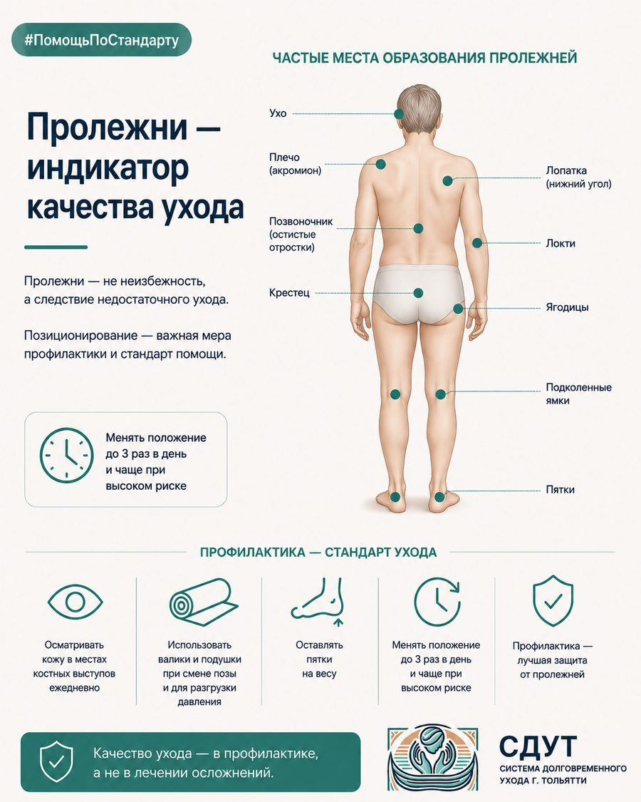
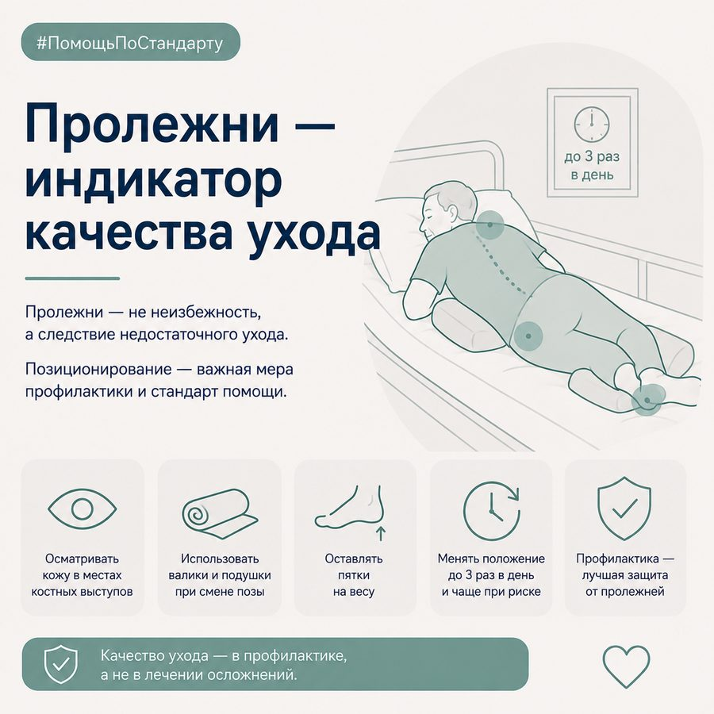
Перемещение: скользящая простыня и другие приспособления
Скользящая простыня позволяет легко перемещать человека в кровати: подтянуть к изголовью, повернуть на бок. Меньше усилий — меньше нагрузки на спину того, кто помогает.
- Скользящий рукав
- Скользящая доска
- Поворотный диск для пересаживания
- Пояс для перемещения
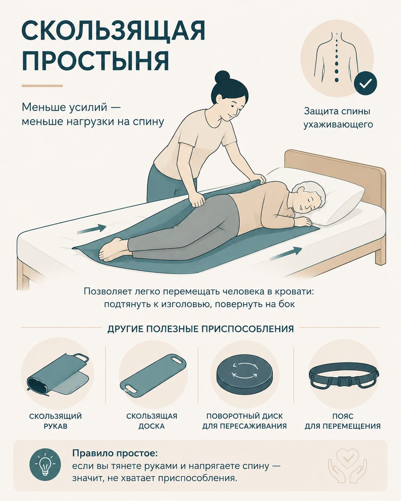
Помощь при передвижении по комнате
Правильная поддержка — меньше риск падений и больше уверенности у человека.
- Безопасно для человека
- Меньше риск падений и травм
- Используем подходящие приспособления
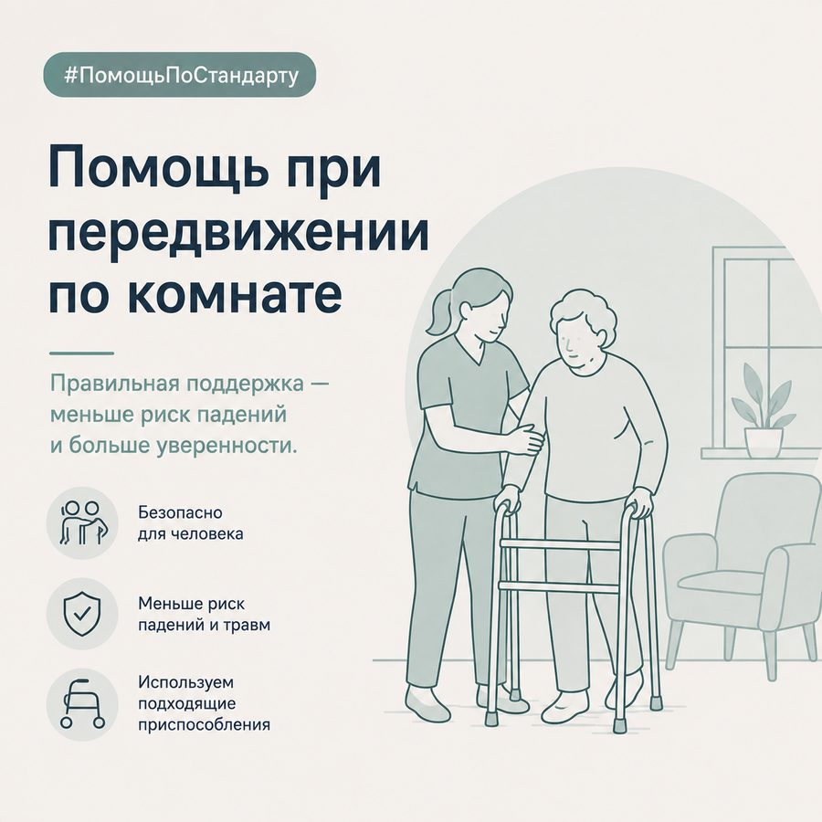
Уход за стомами и катетерами: что можно помощнику, а что нет
Помощник по уходу не проводит врачебных манипуляций. Он помогает обеспечить гигиену, замену расходных материалов и наблюдение за состоянием кожи вокруг — в пределах своих полномочий.
Замена мочеприёмника. Отсоединить использованный мешок, присоединить новый, обработать соединение антисептиком.
Замена калоприёмника. Снять использованный, очистить кожу вокруг стомы, просушить, оценить состояние кожи, наклеить новый.
Гигиеническая обработка. Очищение кожи вокруг стомы и катетера при каждой смене белья или по необходимости.
Наблюдение. Фиксация цвета, запаха и количества отделяемого, изменений кожи и передача информации организатору ухода.
Устанавливать и удалять катетеры.
Проводить бужирование или промывание стомы.
Вводить лекарства или растворы.
Назначать и заменять тип расходных материалов.
Обрабатывать воспалённую кожу без конкретного указания врача.
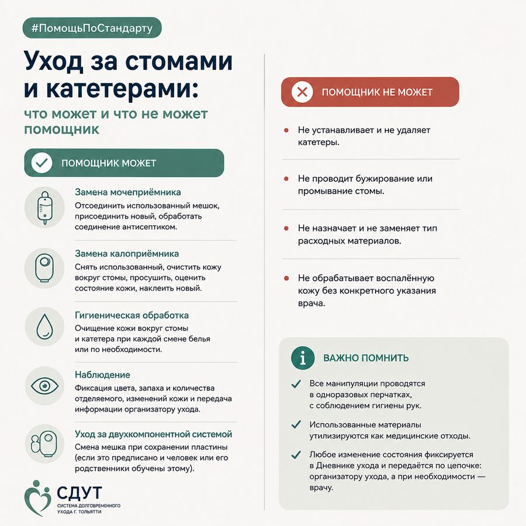
Дневник ухода: зачем эти записи
Записи нужны не для отчётности, а для четырёх вещей:
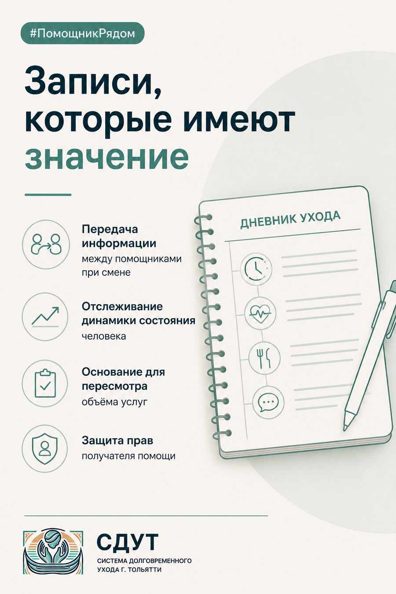
Работа, которая остаётся за кадром
Ежедневная забота — это внимание к мелочам, которые создают безопасность и комфорт. Система работает на опережение: мы не ждём проблем, а помогаем их избежать.
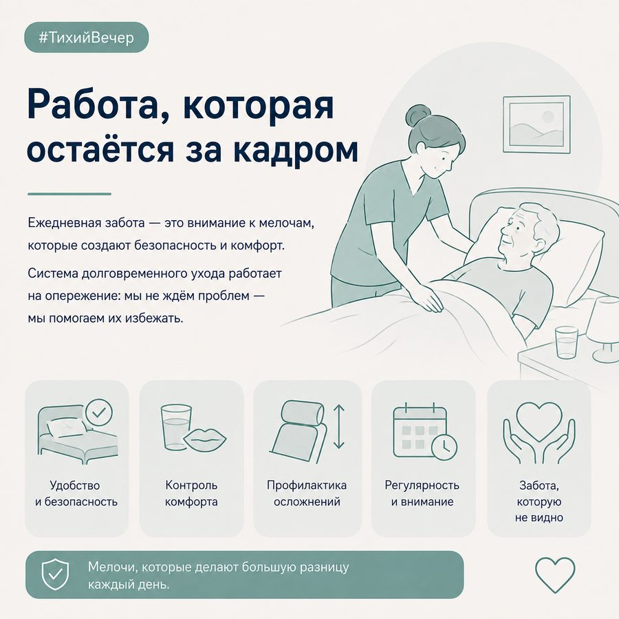
Кто и что имеет право выполнять
У каждого действия есть свой исполнитель, и границы установлены заранее — до того, как кто-то возьмётся за дело.
- Врач, медицинская сестра, фельдшер — медицинские процедуры
- Помощник по уходу — гигиена, кормление, перемещение, наблюдение и передача информации
- Родственник — то, чему его обучили и на что оформили допуск
- Специалист социального сопровождения — бытовая помощь и сопровождение
Помощник по уходу проходит специальное обучение. Медицинское образование для этой работы не обязательно, но и объём допустимых действий ограничен — медицинские манипуляции остаются за теми, у кого есть на них право.
Оборудование и технические средства
В системе долговременного ухода есть пункт проката технических средств реабилитации.
Пункт проката: почему кровать не нужно покупать
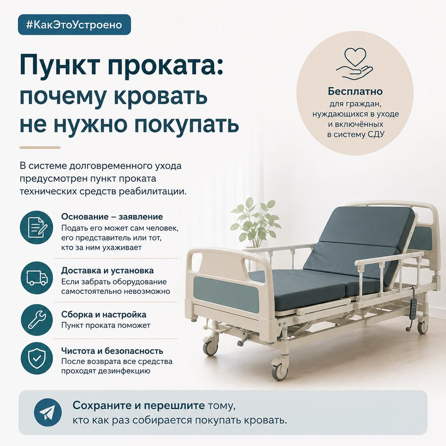
Кресло-коляска: комнатная или прогулочная
Для дома. Компактная и узкая, манёвренная, для ровных поверхностей.
Для улицы и поездок. Устойчивая и проходимая, большие колёса, для неровных поверхностей.
Различаются размером и весом, колёсами, сиденьем и комфортом, манёвренностью и назначением.
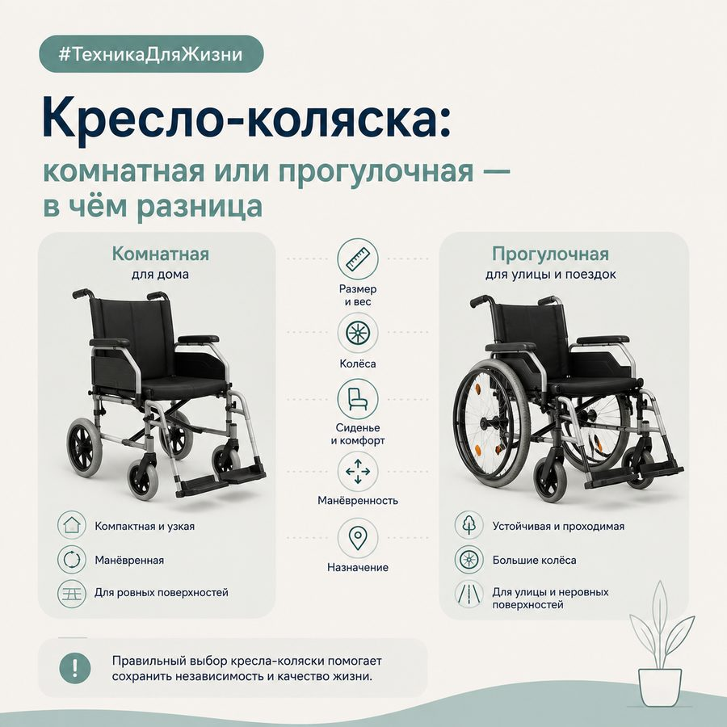
Дома нет функциональной кровати и подъёмника
Это обычная ситуация, а не препятствие. Есть отдельные рекомендации о том, что делать при отсутствии оборудования и как использовать доступные альтернативы.
Там же описано, как запросить технические средства реабилитации или прокатное оборудование. Начните с обращения — подскажем порядок.
Тому, кто ухаживает
Забота о себе — не роскошь, а необходимость.
Усталость того, кто рядом
Уход за близким — это не только физические усилия, но и огромная эмоциональная нагрузка.
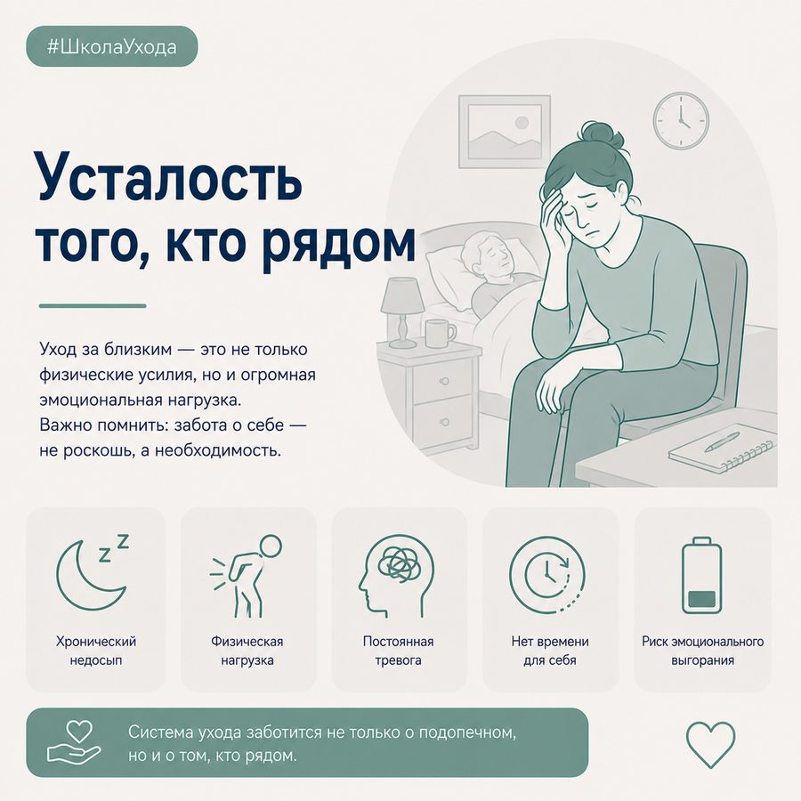
Как проходит обучение родственника
Практически, а не в формате лекции: короткое объяснение — показ действия — повторение вами — проверка понимания — запись результата.
В протоколе фиксируют дату и место, тему, какие навыки показали, что вы выполнили самостоятельно, на что обратить особое внимание, срок действия допуска и подписи обеих сторон.
Я выгораю. Это нормально?
Да, и это не слабость. Скажите об этом координатору прямо: поддержка семьи входит в задачи системы, и обсуждать нужно перераспределение нагрузки, а не терпение.
Говорить, отдыхать, ставить границы, замечать то, что получилось. Просить о помощи — это нормально.
Мне выдали памятку, но я в ней не разобрался
Это считается дефектом документа, а не вашей ошибкой. Непонятная памятка — основание её переделать.
Сообщите координатору. Памятки пересматривают при каждом изменении соответствующего порядка ухода.
Система ухода заботится не только о подопечном
Но и о том, кто рядом. Если тяжело — скажите об этом.
Паллиативная помощь и поддержка семьи
О тех, кто помогает, и тех, кто остаётся после потери.
Мы не привыкаем
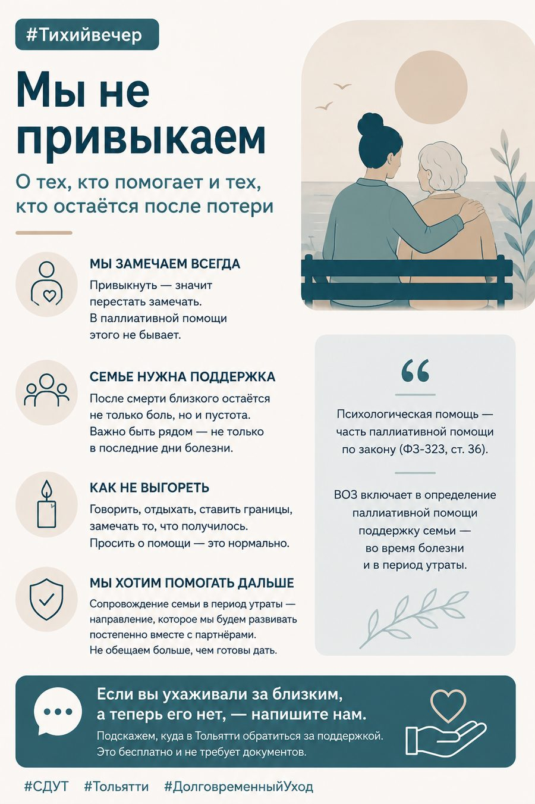
Психологическая помощь — часть паллиативной помощи по закону: Федеральный закон № 323-ФЗ, статья 36.
Всемирная организация здравоохранения включает в определение паллиативной помощи поддержку семьи — и во время болезни, и в период утраты.
Что отличается для паллиативного пациента
Для таких пациентов выделен отдельный маршрут: свои рекомендации на последние дни жизни, выездная патронажная служба и отдельный порядок работы со скорой помощью.
Он нужен, чтобы бригада скорой поняла, какой помощи ждёт этот человек, и не направила его не в то отделение. В документах для таких случаев есть поля с датой последнего визита, рекомендациями, датой следующего визита и контактом выездной службы.
Сколько людей нуждаются в паллиативной помощи на территории
Для коллег и организаторов здравоохранения мы подготовили два документа: методику — подходы, методы, допущения, расчёт кадров и коечного фонда, и практический расчёт для Тольятти и Самары со сравнением результатов.
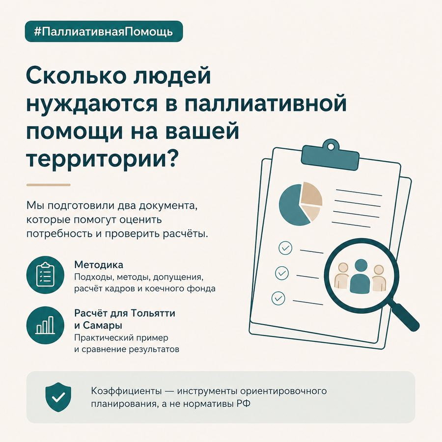
Если вы ухаживали за близким, а теперь его нет — напишите нам
Подскажем, куда в Тольятти обратиться за поддержкой. Это бесплатно и не требует документов.
Права и контроль
Прозрачность — гарантия безопасности для всех: и для человека, и для того, кто помогает.
Контроль как защита, а не проверка
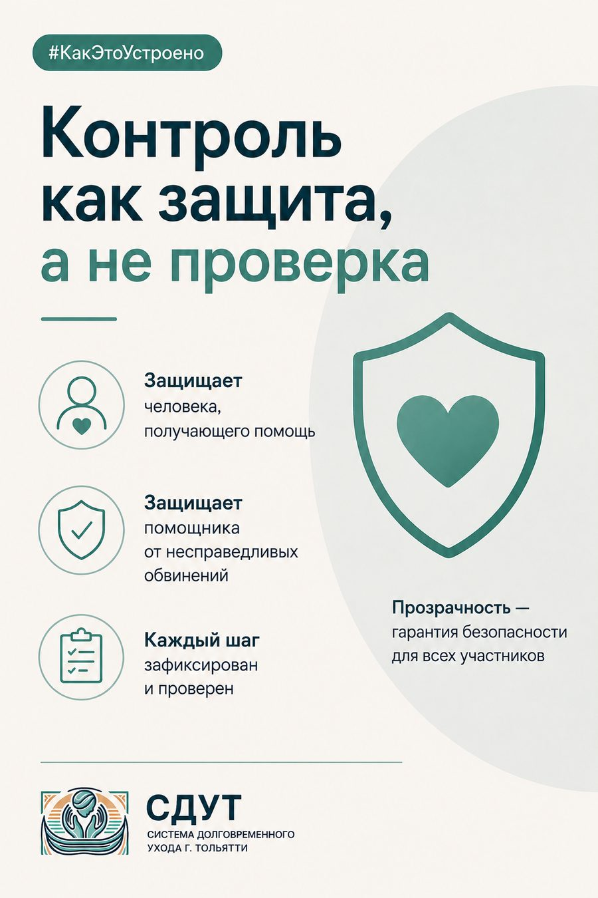
Нам отказали. Что делать?
Запросите письменный отказ с указанием основания — устная формулировка «вам не положено» основанием не является.
Дальше есть три пути: обратиться в вышестоящий орган социальной защиты региона, просить о внеплановой оценке, если состояние изменилось, и обратиться к нам — поможем разобраться, действительно ли отказ обоснован.
Я отказался подписывать согласие. Мне откажут в помощи?
Нет. Отказ не блокирует помощь, если она уже нужна и допустима.
При отказе записывают сам факт отказа, что вам разъяснили, что предложили, какие контакты выдали и какая помощь остаётся доступной.
Человек одинок, законного представителя нет
Для такой ситуации есть отдельный порядок: особый контроль, подключение нескольких служб, инициирование вопроса об опеке. Скажите об этом оператору сразу — маршрут будет другим.
Помощи по факту меньше, чем в программе
Расхождение между программой и тем, что происходит на деле, — повод обратиться к координатору и основание для проверки. Записывайте даты и то, что фактически сделали: без записей разговор сводится к взаимным впечатлениям.
Что должно быть записано при передаче человека под уход
При выписке, переводе или подключении семьи оформляют документ, который связывает всех участников. В нём указывают проблемы ухода, перечень действий, как часто их выполнять, кто именно это делает, особые указания, что делать в нерабочее время, контакты и подпись ответственного.
Уход по состоянию.
Переворачивать каждые 2 часа, осматривать кожу раз в смену, звонить врачу при покраснении кожи, боли, влажности или усилении одышки.
Мне дали документ, а у соседки по палате он другой
Приоритет всегда у последней утверждённой версии — у каждого документа есть номер версии и дата.
Пока расхождение не устранят, документ не используют как основание для новых действий, а устаревшие экземпляры изымают в течение трёх рабочих дней.
Как оценивают качество ухода
По двум независимым вещам:
- Что изменилось у человека — уменьшилась боль, нет новых пролежней, состояние стабильно
- Как выполняли работу — порядок соблюдён, записи внесены, вовремя остановились, когда было нужно, информация передана
Куда пожаловаться, если что-то пошло не так
По любому из каналов связи. Жалоба — прямое основание для внеплановой проверки и пересмотра порядка работы.
Проверяют документы передачи, протоколы обучения, дневники ухода, правильность маршрутизации и полноту записей. Пока система только настраивается, проверки ежемесячные, дальше — ежеквартальные.
Материалы и источники
Видео
Записи вебинаров и видеоразборы. Блок заполняется редакцией.
media-templates в файле index.html и вставьте сюда.Источники
Федеральный закон № 442-ФЗ «Об основах социального обслуживания граждан в Российской Федерации» и Федеральный закон № 323-ФЗ «Об основах охраны здоровья граждан» — базовые законы, в связке с которыми работает система.